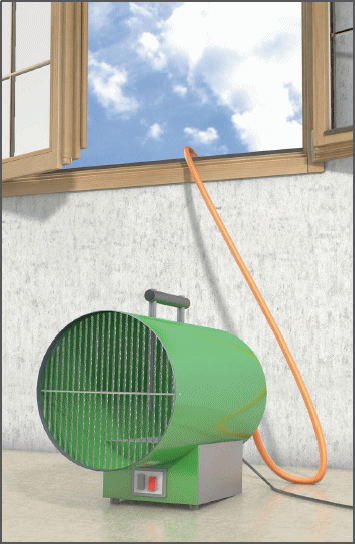

Gefährdungen
- Bei dem Betrieb von Heizgeräten besteht Vergiftungsgefahr durch Abgase sowie Brand- und Explosionsgefahr.
Allgemeines
- Bedienungsanleitung des Herstellers beachten.
- Unterweisung des Bedieners durchführen.
Schutzmaßnahmen
- Heizgeräte standsicher aufstellen und darauf achten, dass Beschäftigte durch Abgase und Strahlungswärme nicht gefährdet werden.
- Für ausreichende Belüftung sorgen.
- Heizgeräte nicht in feuer- und explosionsgefährdeten Räumen aufstellen.
- Ausreichenden Abstand von brennbaren Gegenständen einhalten.
- Beim Austrocknen kann auf Abgaszüge verzichtet werden, wenn sich in diesen Räumen nicht ständig Personen aufhalten und ausreichende Luftzufuhr vorhanden ist.
- Betriebsanweisung aufstellen und Beschäftigte über bestimmungsgemäßen Einsatz von Heizgeräten unterweisen. Die Betriebsanweisung muss am Betriebsort jederzeit zugänglich sein.
Zusätzliche Hinweise für ölbefeuerte Heizgeräte
- Eingebaute Tanks in ölbefeuerten Geräten gegen Erwärmung schützen.
- Beim Auftanken Öl nicht mit heißen Teilen in Verbindung bringen.
Zusätzliche Hinweise für flüssiggasbetriebene Heizgeräte
- Heizgeräte müssen mit einer Flammenüberwachungseinrichtung (z. B. Zündsicherung) ausgerüstet sein, die nicht unwirksam gemacht werden darf.
- Als Verbindungsleitungen nur Hochdruckschläuche (Druckklasse 30) oder Schläuche für besondere mechanische Beanspruchung (Druckklasse 6 mit verstärkter Wanddicke) verwenden.
- Gasentnahme aus Flüssiggasflaschen nur über Druckregelgerät.
- Zur Sicherheit im Falle von Schlauchbeschädigungen sind hinter dem Druckregelgerät
- über Erdgleiche Schlauchbruchsicherung,
- unter Erdgleiche (z. B. Kellerräume) Leckgassicherungen einzubauen.
- Flüssiggasflaschen senkrecht aufstellen, gegen Umfallen sichern und Armaturen vor Beschädigungen schützen.
- In Räumen unter Erdgleiche Heizgeräte und Flüssiggasflaschen zusammen nur aufstellen, wenn sie unter ständiger Aufsicht betrieben werden (ein Vorheizen der Räume ohne Aufsicht ist nicht erlaubt).
- Für ausreichende Belüftung sorgen.
- Leere Behälter und Vorratsbehälter nicht in Räumen unter Erdgleiche (Keller), Treppenräumen, Fluren, engen Höfen, Durchgängen und Durchfahrten, Garagen und Arbeitsräumen lagern.
- Bei mehr als einem Behälter muss die Lagerung in einem Lager erfolgen.
- Nach Beendigung der Arbeiten sowie bei längeren Arbeitsunterbrechungen sind die Gasflaschen (Behälter) aus den Räumen unter Erdgleiche unverzüglich zu entfernen.
- Bei durchgehendem Heizbetrieb (z. B. über Nacht) in Räumen über Erdgleiche
- sind die Gasflaschen über Erdgleiche aufzustellen,
- sind die Flüssiggasschläuche über Leckgassicherungen anzuschließen,
- muss die Flüssiggasanlage mindestens einmal täglich von einer beauftragten Bedienungsperson überprüft werden.
In Räumen unter Erdgleiche dürfen darüber hinaus nur Heizgeräte mit Gebläse eingesetzt werden.
Zusätzliche Hinweise für den Brandschutz
- Alle brennbaren Teile aus der gefährdeten Umgebung entfernen oder durch nicht brennbare Abdeckungen schützen.
- Bei brandgefährdeter Umgebung Löschmittel bereitstellen.
07/2021